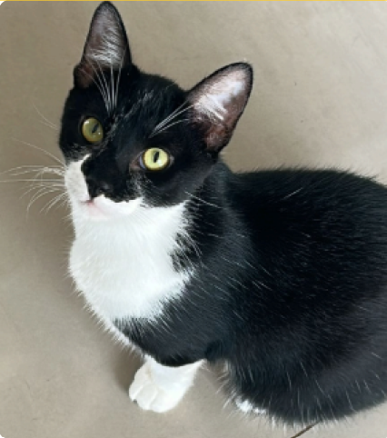
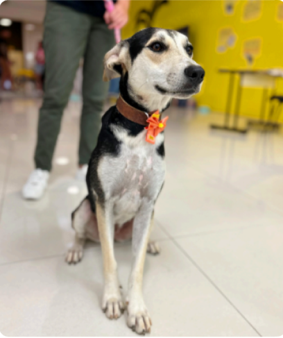

Difusor - 6 meses, macho
Difusor é um gatinho macho, que estava perdido numa fábrica de peças automotivas. Meses depois, Difusor foi finalmente encontrado, e chegou em estado caquético, com extrema magreza, ele foi se recuperando aos poucos e hoje ele é um jovem 100% saudável e cheio de amor e carinho!
- Se dá bem com outros animais (cães e gatos).
- Negativo para FIV e FELV.
- Castrado e Vacinado
Luma - 3 anos, fêmea
Luma, é uma cachorra que vivia nas ruas com seu irmão Juca. Meses depois, ela finalmente foi adotada, mas segue esperando o seu tão sonhado lar. Luma é uma cachorra com puro amor e calmaria, precisando de um lar com muito amor e carinho!
- Porte Grande
- Castrada e Vacinada
